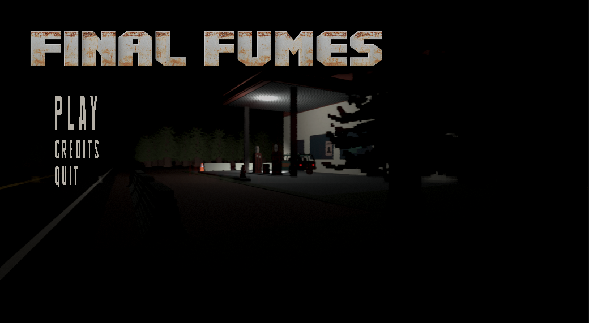
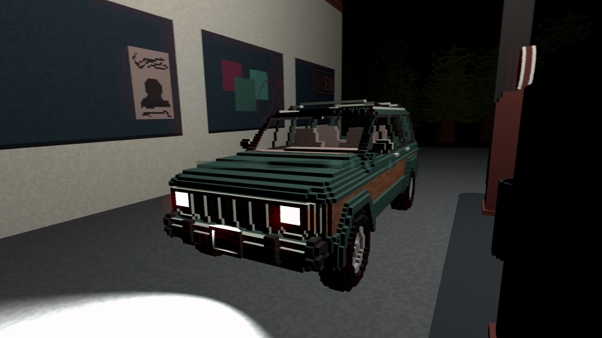
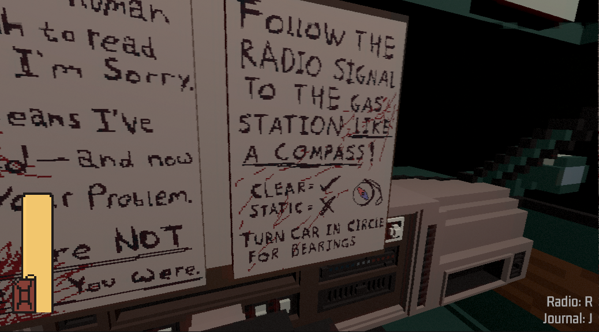
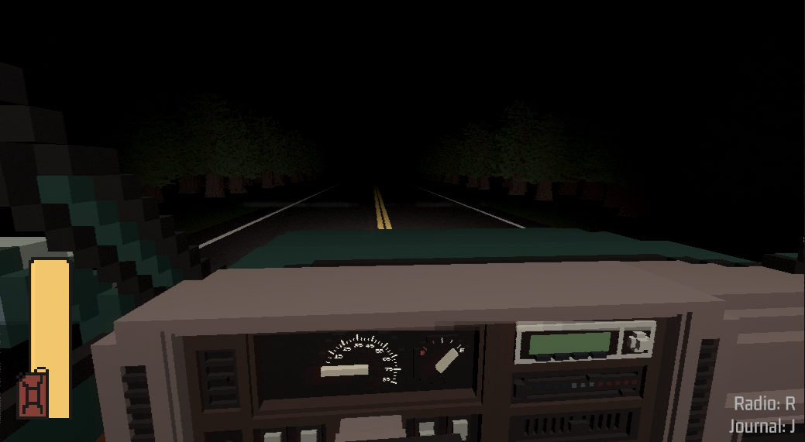

About the Project
This game was created for the EECS 494 class project at the University of Michigan.
I had 3 teammates for this project (see credits). I largely worked on the procedural generation system, the editor tools we used for creating levels, the input system, the radio logic and sounds, the main menu, the warped monster, and a decent portion of the journal pages.)
The game's primary complexities were:
- Figuring out that 3 weeks into development, the primary planned mechanic was not fun.
- Guiding the player to understand the radio.
- Making procedural generation work well (we went through 3-4 iterations of this).
- Balancing monsters and difficulty for the wide variety of skill levels.
- Making the UI integrated seamlessly into the world.
- Creating a balanced shop system with a currency, repairs, and upgrades.
- Making a persistant scene transition manager with a cache to store data on scene reload.
Technologies Used:
- Unity Game Engine
- C# Programming Language
- MagicaVoxel Software
- Python Programming Language (scripts to create in-game assets and audio)
- Audacity Software
- ElevenLabs AI Voice Software
- Unity Version Control (Formerly Plastic SCM)
- Jira for Project Management
Game Details
Game Controls
- Requires Keyboard/Mouse
- Controls learned in game
Download / Play the Game
Click the button below to download the game build:
Gallery




Gameplay Video
Developer Team
- Alan Tommy
- Isaiah Richards
- Jagger Pacheco
- Thomas Dixon
Credits
- Credit to Joseph Brown for main menu music; (used with permission).
- Radio music: https://www.youtube.com/watch?v=FV4DxR7TGOY
- Quick Outline Effect by Chris Nolet: https://assetstore.unity.com/packages/tools/particles-effects/quick-outline-115488
- Voxel Optimization Tool: https://davidevofficial.itch.io/voxeloptimizer
- Car Crash Sound 1: https://pixabay.com/sound-effects/car-accident-real-interior-46387/
- Car Crash Sound 2: https://pixabay.com/sound-effects/car-crash-edit-two-92001/
- Car Idle Sound: https://pixabay.com/sound-effects/diesel-truck-idling-frontwav-14418/
- Stalker (Dark humanoid enemy) reference model: https://www.cgtrader.com/free-3d-models/architectural/decoration/screaming-statue
- Stalker (Dark humanoid enemy) screech sound: https://freesound.org/people/Artninja/sounds/733955/
- Lurker (Spider enemy) reference model: https://www.cgtrader.com/free-3d-print-models/miniatures/other/torture-spider-3d-printer-torture-test
- Lurker (Spider enemy) hiss sound: https://freesound.org/people/Garuda1982/sounds/539299/
- Player Vehicle Base Model: https://www.cadnav.com/3d-models/model-11252.html
- Credit to TextStudio for main menu text tools: https://www.textstudio.com/
- Credit to Textures4Photoshop for main menu text material textures https://www.textures4photoshop.com/tex/metal/old-rusted-metal-surface-texture.aspx#google_vignette
- Hint font used in project: https://www.fonts4free.net/pixel-emulator-font.html
- Radio Font: https://www.fontspace.com/digital-7-font-f7087
- Credit to ChatGPT for general assistance in bug fixes and code discussion.
- Credit to ElevenLabs AI for voice acting.